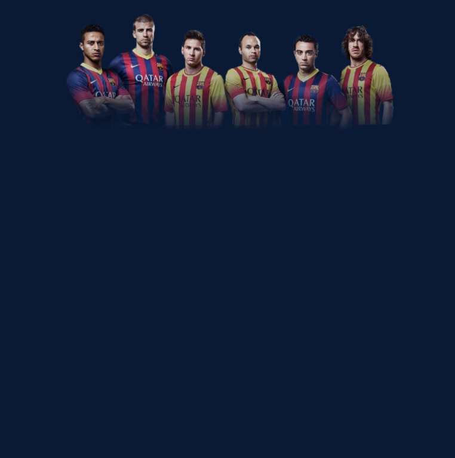

<ul>
    <li>
        <a href="#editEmployeeModal" routerLink="" class="edit" data-toggle="modal"><i class="material-icons"
            data-toggle="tooltip" title="remove_red_eye">keyboard_backspace</i></a>
    </li>
    <li>
        
    </li>
</ul>


